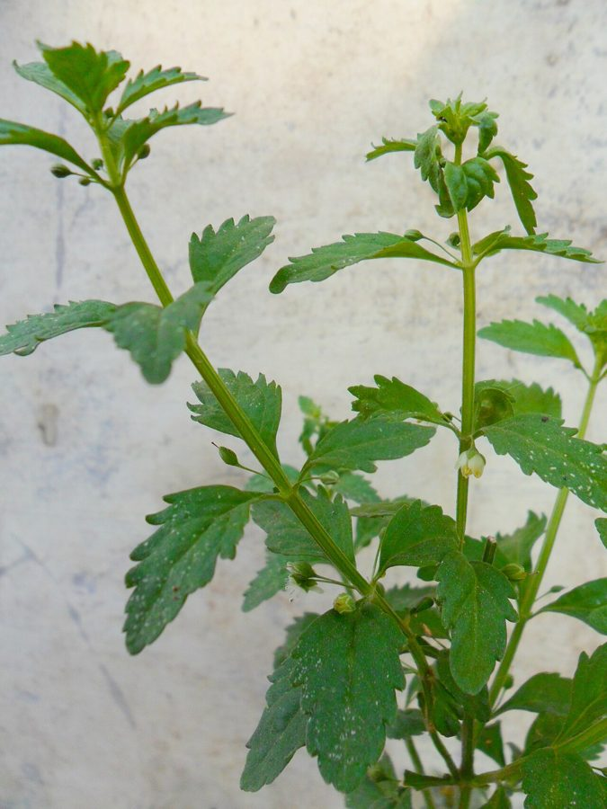

मीठी पत्तीSweet Broomweed
Scoparia dulcis · Plantaginaceae · FLR-0232

- Scientific name वैज्ञानिक नाम
- Scoparia dulcis L.
- Family कुल
- Plantaginaceae
- Hindi हिंदी
- मीठी पत्ती
- Local names स्थानीय नाम
- mithi patti, meethi patti, sweet broomweed, scoparia
- Status here यहाँ की स्थिति
- naturalized
- Movement आवागमन
- Resident, here all year
- Known from कहाँ दर्ज
- Others have published records from the Basti–Ayodhya districts बस्ती–अयोध्या के ज़िलों से दूसरों के प्रकाशित अभिलेख
- IUCN IUCN
- not evaluated
- Review समीक्षा
- audited and independently read
When to look कब देखें
Expected mainly in June, July, August, September, October, November, December. मुख्यतः जून, जुलाई, अगस्त, सितंबर, अक्टूबर, नवंबर, दिसंबर में अपेक्षित।
Uses and possibilities उपयोग और संभावनाएँ
“Traditional medicine” means a documented traditional use, not a claim that it works. Nothing on this page is medical advice.
Drawn from the documented uses in the profile below, where each is labelled traditional, current or a research lead. All uses →
मीठी पत्ती / Sweet Broomweed
Scoparia dulcis L. — Plantaginaceae
मीठी पत्ती — एक छोटी, मीठी खुशबू वाली खरपतवार जो बस्ती के बागों, नर्सरियों और नम बंजर भूमियों में उगती है। इसके बहुत महीन, रेशेदार पत्ते थोड़ी-सी मीठास और सुगंध देते हैं, जिससे इसका नाम "मीठी पत्ती" बना। छोटे-छोटे सफेद फूल पूरे पौधे पर होते हैं। यह पौधा तेजी से बढ़ता है, लेकिन हल्के-फुल्के तने की वजह से मजबूत नहीं होता। परंपरागत चिकित्सा में इसका उपयोग दर्ज है, हालाँकि आधुनिक विज्ञान इसे सत्यापित नहीं कर पाया है।
Quick Identification त्वरित पहचान
| Feature | Description |
|---|---|
| Form | Erect annual herb, 20–60 cm tall, much-branched, delicate, sweet-smelling |
| Leaves | Very small, linear to linear-lanceolate, 0.5–2 cm long, entire or toothed, smooth |
| Flowers | Small, white or pale pink, 2–3 mm diameter, in small axillary spikes |
| Fruit | Small, ovoid capsule, 2–3 mm, containing many tiny seeds |
| Stem | Slender, smooth or very finely hairy, greenish, not woody |
Field tip: A delicate, feathery herb with tiny leaves and small white flowers scattered along the stems. The sweet aroma when leaves are crushed is a distinguishing feature. The plant is so fine that it often goes unnoticed until it flowers.
हिंदी — कैसे पहचानें: बहुत महीन पत्तियाँ, सफेद फूल, मीठी खुशबू। नरम और नाजुक तना। बागों में आता है।
Morphology आकारिकी
Biometrics (specimens from wastelands, Basti):
| Feature | Measurement |
|---|---|
| Plant height | 20–60 cm |
| Leaf length | 0.5–2 cm |
| Leaf width | 0.2–0.5 cm |
| Flower diameter | 2–3 mm |
| Capsule length | 2–3 mm |
Stem and bark: Slender, smooth or finely hairy, terete, greenish, not woody, breaking easily.
Leaves: Alternate or opposite, very small, linear to linear-lanceolate, 0.5–2 cm long, entire or with a few small teeth, glabrous or sparsely hairy.
Flowers: Small, white or pale pink, with four or five small petals, borne in small axillary spikes or along the stems.
Fruit: A small, ovoid capsule, 2–3 mm long, opening by several valves and containing many tiny seeds.
Behaviour & Ecology व्यवहार और पारिस्थितिकता
A tender, light-loving annual of tropical origin that thrives in open, disturbed ground. It establishes quickly in wastelands and field margins, especially in semi-moist soils. The plant is not strongly competitive and is easily pulled when young. It flowers abundantly and is visited by small bees for nectar. The tiny seeds are wind-dispersed and stick to clothing and animal fur.
Life Cycle / Phenology जीवन चक्र
| Month / Season | Event |
|---|---|
| June–July | Seed germination; rapid seedling growth |
| July–August | Vegetative growth; stem elongation |
| August–September | Flowering begins; first flowers |
| September–October | Peak flowering and fruiting |
| October onwards | Seed maturation and dispersal; plant senescence |
One season.
हिंदी: जुलाई में अंकुरण, अगस्त-सितंबर में फूल, अक्टूबर तक बीज।
Associated Species / Interactions संबंधित प्रजातियाँ
- Pollinators: Small bees visit the flowers.
- Seed dispersal: Wind and animal fur.
Pests and Diseases कीट और रोग
- Mostly free of pests and diseases.
- Leaf spot fungi occasionally appear.
Agricultural / Human Relevance कृषि प्रासंगिकता
Traditional use: In some regions of India and Southeast Asia, the herb is used in folk medicine for fevers and digestive complaints, though no clinical evidence supports these claims.
Today: A minor weed in eastern UP, appearing sporadically in gardens, plant nurseries, and wastelands. It is not competitive with crops and causes no significant damage. It is easily controlled by hoeing or hand-weeding. Some gardeners tolerate it because bees visit the flowers.
Control: Hand-weeding is simple; prevent by keeping field margins clean.
हिंदी: बस्ती में बाग़ों और नर्सरियों में आता है। खेतों में नुकसान नहीं। मधुमक्खियों के लिए अच्छा है।
Expected Locally स्थानीय रूप से अपेक्षित
Not a field record. Written from published accounts for eastern Uttar Pradesh. No confirmed local sighting yet — if you have seen it, that is what the atlas needs.
अभी तक स्थानीय पुष्टि नहीं। यह विवरण प्रकाशित स्रोतों से है, किसी अवलोकन से नहीं।
Expected in gardens, plant nurseries, wastelands, and field margins of Basti district during the monsoon and post-monsoon (June–December). GBIF holds published records from the wider Awadh–Purvanchal plain.
Distribution वितरण
Global range: Native to tropical Americas; now naturalized in tropical and subtropical Asia and Africa.
In India: Warm regions, particularly gardens and disturbed areas.
In Uttar Pradesh: Scattered in warm districts; mainly in nurseries and gardens.
In Basti district / eastern UP: Naturalized; common in gardens and nurseries; occasional in wastelands.
Research Questions शोध प्रश्न
- How many seeds does one plant produce, and what is the germination rate?
- Which bee species visit the flowers of Scoparia dulcis, and how much nectar does each flower produce? — Bee observation study.
- Can children observe the daily opening and closing of small flowers? — Phenology observation.
- Does the herb truly have a sweet taste, and do herbivores prefer it over other plants? — Palatability test.
- क्या परंपरागत चिकित्सा में मीठी पत्ती का इस्तेमाल सच है, और क्या कोई आधुनिक अनुसंधान है? — Literature review.
Similar Species मिलती-जुलती प्रजातियाँ
| Species | Key Difference | हिंदी |
|---|---|---|
| Bacopa monnieri (Bacopa) | Leaves opposite, fleshy, in whorls; aquatic habitat; no sweet smell | पानी में रहने वाला, गूदेदार पत्तियाँ |
| Veronica anagallis-aquatica (Speedwell) | Leaves opposite, broader; flowers in terminal racemes; aquatic | पानी का पौधा, चौड़ी पत्तियाँ |
Field rule: Sweet Broomweed has very fine, alternate leaves and an overall sweet aroma. It is much finer and more delicate than the speedwells, with a distinctive sweet smell when crushed.
Taxonomy & Classification वर्गीकरण
Original description. Described by Carl Linnaeus in 1753 in Species Plantarum, Vol. 1, p. 116. Type locality is tropical America.
Subspecies. Monotypic.
Family and order placement. Order Lamiales, family Plantaginaceae (the plantain family), related to speedwells and snapdragons.
Phylogenetic notes. Scoparia is distantly related to Veronica and Bacopa.
IUCN status rationale. Not evaluated. Naturalized and abundant where established; no threat.
Photo Gallery फोटो गैलरी
No photos yet — add field photos to media/species/sweet_broomweed/ and run node scripts/sync_photos.js.
Wanted photos:
- Whole plant showing delicate structure
- Leaves close-up
- White flowers on the stem
- Plant in garden or nursery
References संदर्भ
- Linnaeus, C. (1753). Species Plantarum, Vol. 1, p. 116.
- Hooker, J.D. (1882). Flora of British India, Vol. 4.
- Duthie, J.F. (1903). Flora of the Upper Gangetic Plain.
- Mabberley, D.J. (1997). The Plant-Book. Cambridge University Press.
- Botanical Survey of India. State Flora Series: Flora of Uttar Pradesh. BSI, Kolkata.
- GBIF Occurrence Data — Scoparia dulcis (2026).
Source file: species/flora/weeds/sweet_broomweed.md